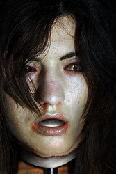

Making a mask like Megan here is actually rather easy. Removal can take anywhere from 30 to 90 minutes. I then rinse the mask in bleaching mixture followed by alcohol. Afterwards, I place the mask on it's stand to let the alcohol evaporate which dries the mask removing any leftover oils making it easier to work on.
Ensuring long lasting quality is important to me so I spend several hours applying various preservation mixtures and treatments to keep the mask as lively as possible while still durable. I then dispose of everything while the mask cures.